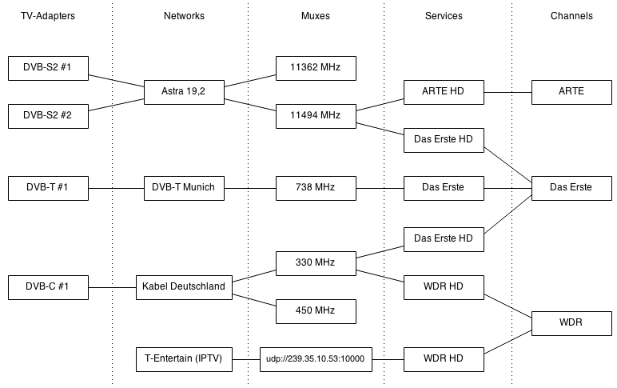

Before you begin
There are some basic concepts that will make life much easier if you understand them from the outset.
Hardware/Software Fundamentals
-
A tuner is the hardware (chipset) needed to interpret a digital television signal and extract from it the programme stream. The tuner hardware is also responsible for communicating with your satellite dish via the LNB in the case of DVB-S.
-
A driver is the piece of software that your operating system uses to talk to the tuner. This can be built into the OS (e.g. ‘supported since kernel X’) or might be a separate piece of software that you need install, and maybe even compile, separately.
-
Firmware is a small piece of binary microcode that your system driver sends to the tuner upon initialisation. This is the cause of more problems than you’d imagine… if you find yourself in trouble, this is the first thing to check along with kernel support for your hardware.
Application/Tvheadend Fundamentals
The Tvheadend software then sets up a series of configuration elements, and the way in which these interact determines how a TV signal ends up in front of you. They all use what’s known as a many-to-many relationship, in that one configuration element can be related to multiple elements of the next type, and vice versa: one tuner has multiple networks, one network can exist on multiple tuners.
-
The network is the software definition of your carrier network. Broadly, it lays out what sort of network it is (such as DVB-T or DVB-S2), how it gets scanned, where the DVB-S satellite is in orbit, and similar. Networks are used by tuners so the hardware knows where to look for a signal.
-
Networks then have muxes. These are the carrier frequencies that exist on the old analogue channels that are used to transmit multiple digital signals rather than a single analogue one. These signals are multiplexed together, hence the name mux.
-
Muxes then carry services. These are the individual streams of data. They can be TV or radio programmes, they can provide data services such as digital teletext, or they can be used as part of the control code for catch-up IPTV services.
-
And finally, services are mapped to channels. These are what you and your client software think in terms of: “I’d like to watch BBC One now, please”.
Why The Complexity?
Simply, because 'BBC One' might exist in many different places... it might have regional variations on multiple frequencies (so different services on different muxes); it might exist on more than one source (perhaps on two different satellites); and it might thus be accessible through more than one piece of hardware (two satellite tuners, or one satellite and one terrestrial tuner).
When you select the channel you want to watch or record, Tvheadend can then map a path through all those variables to ask a particular tuner to go and get the signal for you.
The following diagram explains the relationship between these components:
